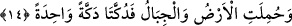

Sözgelimi Arapçada “duribe darbun” (bir vuruş vuruldu) denmez. Çünkü bu ifâde, fiilin
anlamına daha fazla bir anlam katmıyor. Ancak şu kadar var ki âyette “nufiha/üfürüldü”
fiilinin “nefhatun” masdarına isnâd edilmesi uygun düşmüştür. Çünkü burada yapılan
üfürülüş -müphem yâni belirsiz ve mücerred bir üfürülüş değil- “bir kez olmak” gibi
bir nitelikle kayıtlıdır. Burada yer alan üfürülüşten maksad ise ardından hiçbir canlının
canlı kalamayacağı, mutlaka ölecek olduğu sura yapılacak ilk üfürülüştür. İşte bu ilk
üfürülüş esnâsında biraz sonra ondördüncü âyette geleceği üzere yeryüzünün ve
dağların “kaldırılması, birbirine çarpılması” ifâdelerinin işâret ettiği üzere bütün âlem
yıkılıp harap olacaktır.
Keşşaf ’ta şöyle deniyor: Eğer bir kişi çıkar da “sura iki kez üfürülecektir, burada
neden bir kez üfürüleceğinden söz ediliyor?” diye soracak olursa buna şöyle cevap
vermemiz mümkündür: Sura öyle bir üflenecek ki o esnâda bu üfürülüş iki kez değil
sâdece bir kez yapılacaktır. Bir başka ifâdeyle; o büyük olayın meydana gelmesi -sura
üfürülmenin ardından değil- bizâtihi üfürülme olayıyla birlikte meydana gelecektir.
Sura üfürülmenin büyük bir olay olması, sura üfürülmüş olmasından değil ona sâdece
bir kez üfürülmüş olmasından kaynaklanmaktadır. Nitekim Allah bu olaya “vâhide/bir”
ifâdesiyle işâret buyurmaktadır.
Keşfu’l-esrâr’da ifâde edildiğine göre âyette “vâhide/bir” kelimesinin zikredilmesi,
ifâdeye pekiştirme gücü katmak içindir. Çünkü üfürme zâten ancak bir kez olur.
14. Yeryüzü ve dağlar kaldırılıp birbirine tek çarpışla çarpılıp darmadağın edildiği
zaman,
“Yeryüzü ve dağlar kaldırılıp” yâni sırf ilâhî bir kudret ile veya yer sarsıntısı, fırtına
esmesi gibi bir şeyin aracılığı ile havaya kaldırılıp “birbirine tek çarpışla çarpılıp
darmadağın edildiği zaman.” Yukarda âyeti tefsir ederken yeryüzünün deprem veya
fırtına nedeniyle yerinden sökülüp havada uçuşacağından söz ettik. Çünkü rüzgar esme
gücü sâyesinde yeryüzünü ve dağları önüne katıp havada sürükleyecektir. Tıpkı Âd
kavminin yeryüzü gibi olan vücudlarını ve hevdeçleri ile birlikte dağ gibi olan
develerini önüne katıp, havalandırıp sürüklediği gibi demektir.
Âyette yeryüzünün ve dağların birbirine çarpılmasından söz ediliyor. Bu şu demektir:
Bir bütün olarak yeryüzü ile tüm dağlar silsilesi havaya kaldırılmalarının ardından iki
grub hâlinde birbirine bir kez olmak kaydıyla çarpılacaktır. Bu öyle bir çarpma
olacaktır ki artık onun tekrarına ve ikinci bir kez yapılmasına ihtiyaç kalmayacaktır.
Bunun sonunda yeryüzü darmadağın olup akıp giden kum yığınına dönecek ya da toz
duman hâline gelecektir. Âyeti böyle anlamayıp işin zâhirine göre konuşacak olursak o
zaman “dekke” fiilinin “dekekne” şeklinde çoğul olarak yeryüzüne ve dağlara isnâd